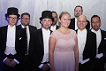

Tord Staffan Lundström
Professor, Ämnesföreträdare, Luleå tekniska universitet, Forskningsämne: Strömningslära.
| Född: | 1965 Burträsk, Burträsk fs, Burträsk kn. [1] |
|---|
| Levde: | 1971 Burträsk, Burträsk fs, Burträsk kn. [1] |
|---|
| Levde: | 1981 Atleten 3, Ringv 19, Fredriksberg, Burträsk, Burträsk fs, Skellefteå kn. [2] |
|---|
| Skriven: | 1991 Norrbackag 3 F, Skellefteå, Sankt Olovs fs, Skellefteå kn. [3] |
|---|
| Vigsel: | 1999. |
|---|
| Levde: | 2008 Midsommarvägen 58, Luleå. [4] |
|---|
Noteringar
Allt att veta om Staffan Lujndström: Se länken: www.ltu.se/staff/s/stlu-1.10409
Avdelning: Strömningslära och experimentell mekanik
Institutionen för teknikvetenskap och matematik
Staffan.Lundstrom@ltu.se
0920-492392
E802 Luleå
_________________________________________________________________________
Mer småskalig vattenkraft för att underlätta omställningen till mer förnyelsebar energi. Det tror forskare vid Luleå tekniska universitet på, nu försöker de ta fram en ny typ av små miljövänliga vattenkraftverk.
Redan idag står den småskaliga vattenkraften för dubbelt så mycket el jämfört med vad vindkraften gör, men professor Staffan Lundström tror på ännu större potential.
– Dels i anläggningar som har varit i bruk och inte är i bruk idag, så kan det finnas ställen där det är dämt och där man då kan sätta in småskalig vattenkraft som vi då tror är mer miljövänlig än den som finns idag, säger Staffan Lundström, professor i strömlära vid Luleå tekniska universitet.
I Sverige finns idag nästan 2 000 småskaliga vattenkraftverk i drift, det vill säga på max 10 megawatt.
Tillsammans producerar de lika mycket el som vad drygt 200 000 normalvillor förbrukar varje år. Dessutom står ytterligare lika många små kraftanläggningar stilla efter att de togs ur drift under 50 och 60-talet.
Men nu ska forskarna i Luleå tillsammans med Sveriges lantbruksuniversitet i en pilotanläggning i Norrbotten i ett första steg testa nya tekniska mer miljövänliga lösningar som skulle kunna byta ut äldre stillastående verk, eller byggas som helt nya vid lämpliga vattendrag.
– Tanken är att det blir ett koncept som blir möjligt att applicera på andra ställen.
Turbiner som fisk lättare ska kunna simma igenom, och vatten som smörjmedel istället för olja är bara några exempel på nya lösningar, berättar Staffan Lundström.
I en förlängning ser han en möjlig utveckling liknande den som vindkraften haft med småskaliga vindkraftskooperativ.
– I och med att det är en liten anläggning, alltså små anläggningar som inte är så dyra så ska det finnas en potential för mindre föreningar och grupper av människor som kan gå ihop på en sådan här sak, det tror jag.
I Jönköping håller länsstyrelsen nu på att inventera möjligheterna med att ta länets äldre små stillastående verk i drift igen.
Men det finns också kritik mot det ökade intresset för småskalig vattenkraft.
– Den ger väldigt lite el men ställer samtidigt till med väldigt stora skador i naturen. En ål som ska vandra upp den dör lika effektivt i en liten turbin som i en stor turbin. Vi tror att man ska satsa på vattenkraftproduktion och effektiviseringar i de stora vattenkraftverken där vi redan har tagit stora miljöskador som en så att säga investering, och så ska man låta de små vara för friluftslivets skull och för den biologiska mångfaldens skull. Det är en bra uppdelning, säger Stefan Nyström, generalsekreterare i Sveriges Sportfiske- och Fiskevårdsförbund, Sportfiskarna.
2010-05-14
sverigesradio.se/sida/artikel.aspx?programid=83&artikel=3685997
Personhistoria
| Årtal | Ålder | Händelse |
|---|
| 1965 |
|
Födelse 1965 Burträsk, Burträsk fs, Burträsk kn [1] |
| 1968 |
|
Makan Anette Christina Nilsson föds 1968 Hudiksvalls fs, Hudiksvalls kn [5] |
| 1971 |
|
Levde 1971 Burträsk, Burträsk fs, Burträsk kn [1] |
| 1981 |
|
Levde 1981 Atleten 3, Ringv 19, Fredriksberg, Burträsk, Burträsk fs, Skellefteå kn [2] |
| 1991 |
|
Skriven 1991 Norrbackag 3 F, Skellefteå, Sankt Olovs fs, Skellefteå kn [3] |
| 1999 |
|
Vigsel Anette Christina Nilsson 1999 |
| 2008 |
|
Levde Anette Christina Nilsson 2008 Midsommarvägen 58, Luleå [4] |
| 2012 |
|
Fadern Tord Bruno Lundström dör 2012-04-12 Norrbölegatan 11, Lgh 1102, Skellefteå, Sankt Olovs fs, Skellelteå kn [6] |
Dokument
Källor
| [1] | Mtl Västerbottens län 1971 |
| |
| | |
| [2] | Mtl Västerbottens län 1981 |
| |
| | |
| [3] | Mantalslängd 1991, Västerbottens län |
| |
| | |
| [4] | https://www.ratsit.se/sok/avancerat/person |
| |
| | |
| [5] | Mtl Gävleborgs län 1971 |
| |
| | |
| [6] | FK 13 / man91 |
| |
|
 |
2015-04-22. Staffan Lundström
Professor, Ämnesföreträdare
Luleå tekniska universitet
Forskningsämne: Strömningslära
Avdelning: Strömningslära och experimentell mekanik
Institutionen för teknikvetenskap och matematik
Staffan.Lundstrom@ltu.se
0920-492392
E802 Luleå
www.ltu.se/staff/s/stlu-1.10409
|
| |
|
2015-04-22. Staffan Lundström, professor och vetenskaplig ledare för Smarta maskiner och material
Foto: Tomas Bergman
|
| |
|  |
2016-11-17. Forskningsämnet strömningslära var väl representerade på årets akademiska högtid, bland annat två nya professorer och tre nya doktorer
Publicerad: 17 november 2016
Från vänster: Simon Johansson (ny doktor), Gunnar Hellström (handledare), Patrick Jonsson (ny doktor), Shervin Khayamyan (ny doktor), Sofia Larsson (handledare), Staffan Lundström (handledare), Fredrik Engström (ny adjungerad professor), Lars-Göran Westerberg (ny professor).
Åtta från strömningslära på promovering, LTU, Luleå.
Foto: Linnea Lindberg
www.ltu.se/research/subjects/Stromningslara/Nyheter-och-aktuellt/Atta-fran-stromningslara-pa-promovering-1.159669
|
| |
|
2010-05-14. Staffan Lundström, professor i strömlära vid Luleå tekniska universitet.
Foto: Nils Eklund/SR.
Baearbetat av Jan Fredman
sverigesradio.se/sida/artikel.aspx?programid=83&artikel=3685997
|
|

{kind=link}
{kind=link}
{kind=link}